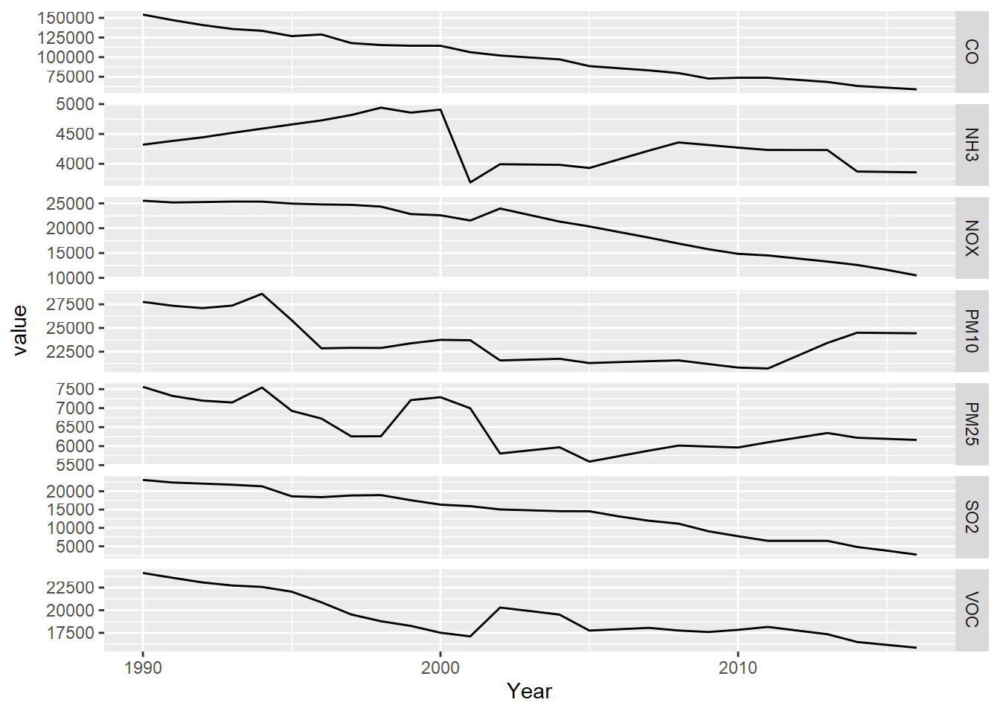

2 Air pollutant emissions trends (EPA)
The National Emissions Inventory (NEI) program of the US EPA is a detailed estimate of air emissions of criteria and hazardous air pollutants from a wide variety of air emissions sources. The inventory is released every three years based primarily upon data provided by state, local, and tribal air resources agencies for pollution sources they monitor, supplemented by data developed by the US EPA.
Air pollutant data were downloaded from https://www.epa.gov/air-emissions-inventories/air-pollutant-emissions-trends-data and provided in the igisci package.
Processing these data to create a free_y faceted graph (2.1) employs several data transformation methods we’ve looked at, and some we haven’t:
summarize_allgets means of all variables, though since we’re just using the totals, this just causes worksheets with multipleTotalrows to merge into one; they’re actually the same valuepivot_longeris used twice, first to create columns for each pollutant, so the columns can be binded together, then later to create a facet graph where each pollutant becomes a parameter factorbind_colsto combine a series of data frames with each having the same years (1990:2016) when data for all parameters were collected- A fix for dealing data not all being read in as numeric, needed for an entry error for the NH3 data, was developed by first reading in the
Source Categorycolumn, then the yearly data values, settingcol_types="numeric", then binding the columns
library(tidyverse); library(readxl); library(igisci)
dtaPath <- ex("airquality/Pollution by type US 1970 to 2016.xlsx")
YearColumn <- readxl::read_xlsx(dtaPath, sheet = "SO2", skip=2) %>%
pivot_longer(cols=`1990`:`2016`, names_to="Year") %>%
dplyr::select(Year) %>% mutate(Year=as.numeric(Year))
YearCol <- as.data.frame(unique(YearColumn$Year))
names(YearCol) = "Year"
getPollutant <- function(pollutant){
thedata <- readxl::read_xlsx(dtaPath,sheet=pollutant,skip=2,
col_types="numeric") %>%
dplyr::select(-`Source Category`)
rowheaders <- readxl::read_xlsx(dtaPath,sheet=pollutant,skip=2) %>%
dplyr::select(`Source Category`)
bind_cols(rowheaders,thedata) %>%
dplyr::select(`Source Category`,`1990`:`2016`) %>%
filter(`Source Category`=="Total") %>%
group_by(`Source Category`) %>%
summarize_all(list(mean)) %>%
pivot_longer(cols=`1990`:`2016`,names_to="Year",values_to=pollutant) %>%
dplyr::select(pollutant)
}
SO2 <- getPollutant("SO2")
PM25 <- getPollutant("PM25Primary") %>% rename(PM25=PM25Primary)
PM10 <- getPollutant("PM10Primary") %>% rename(PM10=PM10Primary)
NOX <- getPollutant("NOX")
CO <- getPollutant("CO")
VOC <- getPollutant("VOC")
NH3 <- getPollutant("NH3")
pollutants <- bind_cols(YearCol,CO,NOX,SO2,PM25,PM10,VOC,NH3)#
pollutant_long <- pollutants %>%
pivot_longer(cols = CO:NH3, names_to="parameter", values_to="value")
p <- ggplot(data = pollutant_long, aes(x=Year, y=value)) + geom_line()
p + facet_grid(parameter ~ ., scales = "free_y")
FIGURE 2.1: Facet graph of air pollutants in the US, 1990-2016